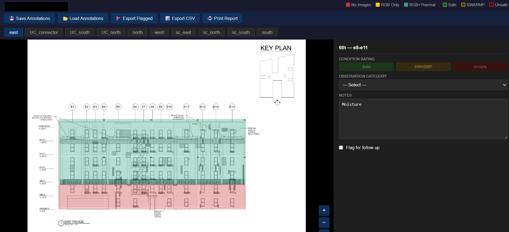
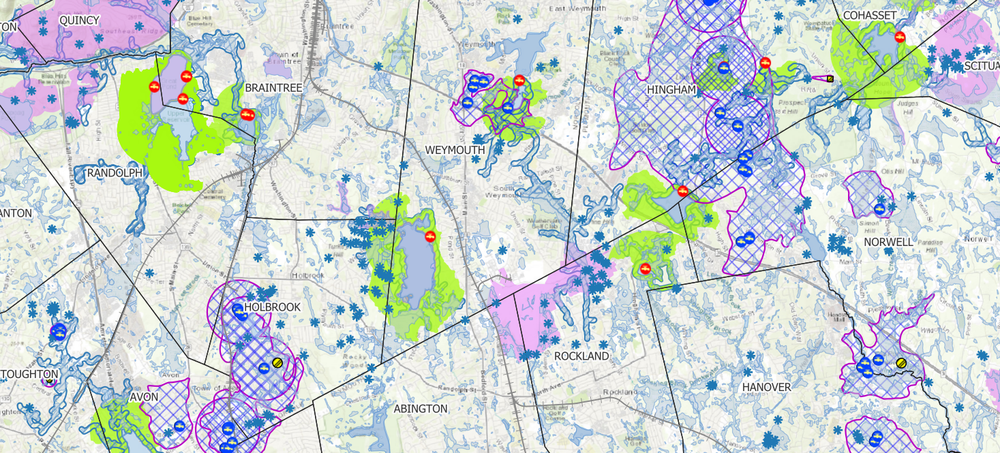
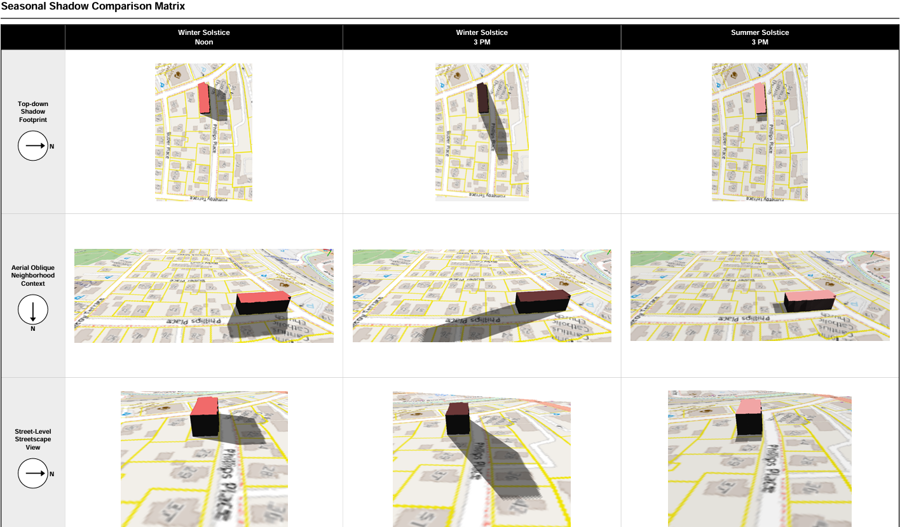

A deliverable is rarely a picture. It is usually software, a measurement, or an exhibit someone makes a decision on.

Structural / Facade
Facade Inspection Viewer
NYC FISP facade inspection deliverable. A custom Python and HTML viewer that indexes annotated RGB and thermal defects to each building face and an engineering drawing grid.
- Python
- HTML / CSS
- Drone capture
Replaced a manual reporting process with a repeatable, production-proven pipeline.
View case study

Web Mapping
Conservation & Hostel Web Maps
Live, multi-location web maps on Supabase and Leaflet: a conservation parcel monitoring map for a land coalition, and a hostel-network map, both served from a Postgres/PostGIS backend through a clean front end.
- Supabase / PostGIS
- Leaflet
- JavaScript
Shipped end to end, from data model to deployed front end. Expandable across locations.
View case study

Rail / Environmental
Railroad Corridor Mapping
Right-of-way corridor map sheets with protected environmental zones (wetlands and buffer zones) rendered as AutoCAD underlays, so rail engineering crews can work within regulatory limits.
- QGIS
- MassGIS layers
- GeoTIFF / CAD
Field-ready compliance overlays delivered across multiple regional and national rail corridors.
View case study

Legal / Land Use
Court-Ready Spatial Exhibits
Parking utilization and solar/shadow impact analysis prepared as exhibits for a Massachusetts Land Court case, built from drone survey data and certified engineering dimensions.
- QGIS
- ReportLab
- Drone survey
Held up under legal scrutiny. Deposition-ready work product.
View case study